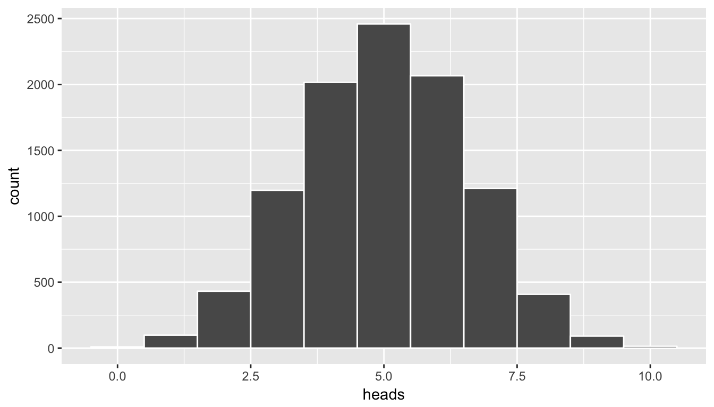
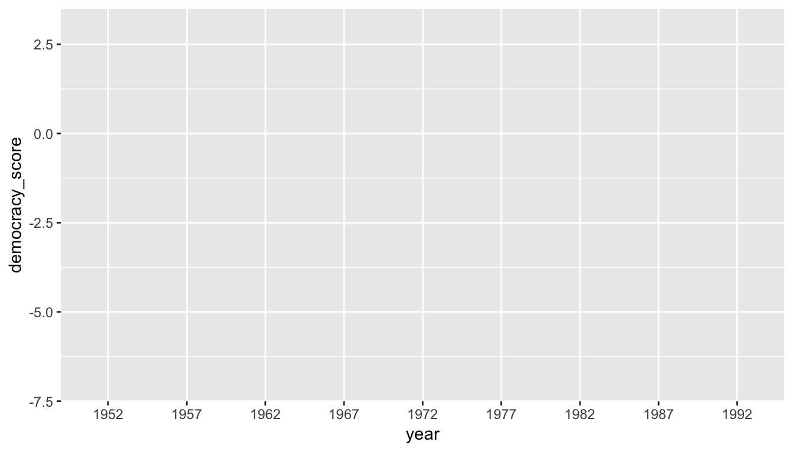
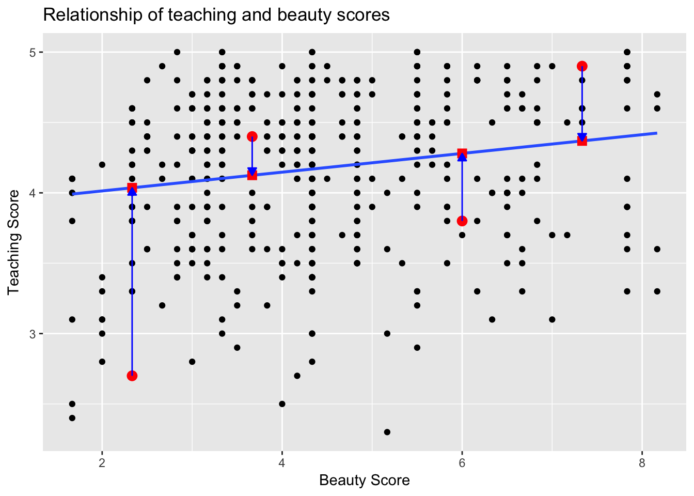

2 Data Modeling with Regression
Now that we are equipped with data visualization skills from Chapter ??, data wrangling skills from Chapter ??, and an understanding of the “tidy” data format from Chapter ??, we now proceed with data modeling. The fundamental premise of data modeling is to model the relationship between:
- An outcome variable \(y\), also called a dependent variable
- Explanatory/predictor variables \(\vec{x}\), also called independent variables and covariates. The arrow on top of the \(x\) indicates that we have a vector or a series of values.
Why do we have two different labels, explanatory and predictor, for the variables \(\vec{x}\)? That’s because data modeling can be viewed through two lenses
- Modeling for explanation: You want to study the relationship between an outcome variable \(y\) and a set of explanatory variables, determine the significance of any found relationships, and have measures summarizing these. For example: “Does knowing a population’s smoking habits explain their lung cancer prevalence?”
- Modeling for prediction: You want to predict an outcome variable \(y\) based on the information contained in a set of predictor variables. You don’t care so much about understanding how all the variables relate and interact, but so long as you can make good predictions about \(y\), you’re fine. For example: “Can we predict whether someone will enjoy a recommended movie based on their previous movie ratings?”
Data modeling is used in a wide variety of fields, including statistical inference, causal inference, artificial intelligence, and machine learning. There are many techniques for data modeling, such as tree-based models, neural networks/deep learning, and more. However, we’ll focus on one particular technique: linear regression, one of the most commonly-used and easy to understand approaches to modeling. Linear regression involves:
- An outcome variable \(y\) that is numerical
- Explanatory/predictor variables \(\vec{x}\) that are either numerical or categorical
In this chapter, we’ll start considering a wider array of datasets, all easily accessible via R packages. We will also discuss the concept of correlation and how it is frequently incorrectly used to imply causation.
Needed packages
Let’s load all the packages needed for this chapter. If needed, read Section ?? for information on how to install and load R packages.
library(ggplot2)
library(dplyr)
#remotes::install_github("moderndive/moderndive")
library(moderndive)Notice we load a new package called moderndive thus you’ll need to install this once. This is an accompaniment package to the ModernDive book that includes 3 useful functions for linear regression.
2.1 Five Regression Models - The 5RM
As stated in the introduction, linear regression can be used to model the relationship between
- An outcome variable \(y\) that is numerical
- Explanatory/predictor variables \(\vec{x}\) that are either numerical or categorical
Whereas there is always only one numerical outcome variable \(y\), we have choices on both the number and the type of explanatory/predictor variables \(\vec{x}\) to use. In this Chapter, we’re going to cover five regression models which we term the “5RM”:
- 5RM#1: A single numerical explanatory/predictor variable \(x\). This scenario is known as simple linear regression. We’ll be using the
evalsdataset of instructor evaluations at the University of Texas, Austin. - 5RM#2: A single categorical explanatory/predictor variable \(x\). We’ll be using the
gapminderdataset of international development data. - 5RM#3: Two numerical explanatory/predictor variables \(x_1\) and \(x_2\). This is the first scenario of multiple regression given that there are now more than one explanatory/predictor variable. We’ll be using the
Creditdataset of credit card balance data. - 5RM#4: One numerical and one categorical explanatory/predictor variable. We’ll cover interaction models here. We’ll revisit the
evalsdataset here. - 5RM#5: Two categorical explanatory/predictor variables. We’ll be using the
biopicsdataset of movie data.
2.2 5RM#1: Understanding Teacher Evaluations
Why do some professors at universities and colleges get high teaching evaluations from students while others don’t? What factors can explain these differences? Are there biases? These are questions that are interest to professors and administrators, as teaching evaluations are among the criteria considered for promotion to tenure.
Researchers at the University of Texas in Austin tried to answer this question: what factors can explain differences in instructor’s teaching evaluation scores? To this end, the collected information on \(n=463\) instructors. A full description of the study can be found at openintro.org, but let’s summarize the variables that were collected:
- Outcome variable \(y\): Average teaching score, based on students evaluations between 1 and 5
- Explanatory variables \(x\)
- their rank: teaching, tenure track, or tenured
- their ethnicity: minority or non-minority
- their (binary) gender: male or female
- their language: whether or not English was their mother tongue
- their age:
- their average “beauty” rating, based on a panel of 6 students’ scores between 1 and 10.
Let’s load the data and select() only the 7 variables listed above:
# load(url("http://www.openintro.org/stat/data/evals.RData"))
evals <- readr::read_csv("~/Desktop/evals.csv")
evals <- evals %>%
select(score, bty_avg, ethnicity, gender, language, age, rank)In this section we’ll try to explain differences in instructor evaluations scores as a function of their beauty scores. We’ll model the relationship between these two variables with a particular kind of linear regression called simple linear regression. Simple linear regression is the most basic form of linear regression where we have
- A numerical outcome variable \(y\), in this case teaching
score - A single numerical explanatory/predictor variable \(x\), in this case
bty_avg
2.2.1 Exploratory data analysis
A crucial step before doing any kind of modeling or analysis however is performing an exploratory data analysis, or EDA, of all our data. EDA can give you a sense of the distribution of data, whether there are outliers and/or missing values, but most importantly it can inform how to build your model. There are many approaches to EDA, here are three:
- Most fundamentally, just looking at the raw values, in a spreadsheet for example. While this may seem trivial, many people ignore this crucial step!
- Compute summary statistics likes means, medians, and standard deviations.
- Create data visualizations.
We start off by looking at the raw values. You can do this by running View(evals) in the console to pop-up the spreadsheet viewer. Here is a snapshot of 5 randomly chosen rows:
| score | bty_avg | ethnicity | gender | language | age | rank |
|---|---|---|---|---|---|---|
| 4.8 | 4.17 | not minority | male | english | 64 | tenured |
| 5.0 | 3.33 | minority | male | english | 50 | teaching |
| 4.2 | 2.67 | not minority | male | english | 42 | tenured |
| 3.4 | 2.83 | not minority | male | english | 57 | tenured |
| 4.3 | 4.17 | not minority | female | english | 33 | tenure track |
Let’s also use the glimpse() function:
glimpse(evals)Observations: 463
Variables: 7
$ score <dbl> 4.7, 4.1, 3.9, 4.8, 4.6, 4.3, 2.8, 4.1, 3.4, 4.5, 3.8, 4....
$ bty_avg <dbl> 5.00, 5.00, 5.00, 5.00, 3.00, 3.00, 3.00, 3.33, 3.33, 3.1...
$ ethnicity <chr> "minority", "minority", "minority", "minority", "not mino...
$ gender <chr> "female", "female", "female", "female", "male", "male", "...
$ language <chr> "english", "english", "english", "english", "english", "e...
$ age <int> 36, 36, 36, 36, 59, 59, 59, 51, 51, 40, 40, 40, 40, 40, 4...
$ rank <chr> "tenure track", "tenure track", "tenure track", "tenure t...We see that both variables of interest, bty_avg and score, consist of numerical values, as well as the age variable. The variables ethnicity, gender, language, and rank however are categorical. Let’s now compute some summary statistics for both the explanatory/predictor variable and the outcome variable using the summary() function, which returns the minimum, the first quartile, the median, the mean AKA the average, the third quartile, and the maximum.
summary(evals$bty_avg) Min. 1st Qu. Median Mean 3rd Qu. Max.
1.67 3.17 4.33 4.42 5.50 8.17 summary(evals$score) Min. 1st Qu. Median Mean 3rd Qu. Max.
2.30 3.80 4.30 4.17 4.60 5.00 We get an idea of how the values in both variables distributed. For example, the average teaching score was 4.17 out of 5 whereas beauty scores range from 1.67 to 8.17. The summary() function however only returns what are called univariate summaries i.e. summaries about single variables. Since we are considering the relationship between two numerical variables, it would be nice to have a summary statistic that simultaneously considers both variables. The correlation coefficient is a bivariate summary statistic that fits this bill. It is a value between -1 and 1 that summarizes the strength of the linear relationship between two numerical variables; for more discussion on the correlation coefficient, see Section 2.8.1 below. The correlation coefficient is computed using the cor() function, and in our case, the correlation is positive.
cor(evals$score, evals$bty_avg)[1] 0.187Since both the score and bty_avg variables are numerical, a scatterplot is an appropriate graph to visualize this data. Let’s do this using geom_point() and set informative axes labels and title.
ggplot(evals, aes(x = bty_avg, y = score)) +
geom_point() +
labs(x = "Beauty Score", y = "Teaching Score", title = "Relationship of teaching and beauty scores")
Figure 2.1: Instructor evaluation scores at UT Austin
However Figure 2.1 suffers from overplotting; let’s break it up with a little random jitter added to the points in Figure 2.2; note that we are only altering the visualization of the points; the original data stays the same.
ggplot(evals, aes(x = bty_avg, y = score)) +
geom_jitter() +
labs(x = "Beauty Score", y = "Teaching Score", title = "Relationship of teaching and beauty scores")
Figure 2.2: Instructor evaluation scores at UT Austin: Jittered
From this visualization we make several observations:
- Most beauty scores lie between 2 and 8
- Most teaching scores lie between 3 and 5
- Most importantly, there seems to be a slight positive relationship between teaching score and beauty score, meaning as instructors have higher beauty scores, they tend to have higher teaching scores as well!
Let’s first improve on Figure 2.2 by adding the “best-fitting” line in Figure 2.3; this is easily done by adding a new layer to the plot + geom_smooth(method="lm").
ggplot(evals, aes(x = bty_avg, y = score)) +
geom_point() +
labs(x = "Beauty Score", y = "Teaching Score", title = "Relationship of teaching and beauty scores") +
geom_smooth(method = "lm")
Figure 2.3: Simple linear regression line with error band
The positive slope of the blue line is consistent with our observation from earlier that there is a positive relationship between score and bty_avg. What do we mean by “best-fitting” line? While the intuition is easy to visualize in the above plot, there is a mathematically precise definition of “best”, which we discuss in Section 2.8.2 below.
What are the grey bands surrounding the blue line? These are standard error bands, which can be thought of as error/uncertainty bands. We’ll revisit this concept later so let’s suppress these grey bars for now by adding the argument se=FALSE to geom_smooth(method = "lm"):
ggplot(evals, aes(x = bty_avg, y = score)) +
geom_point() +
labs(x = "Beauty Score", y = "Teaching Score", title = "Relationship of teaching and beauty scores") +
geom_smooth(method = "lm", se = FALSE)
Figure 2.4: Simple linear regression line without error bands
2.2.2 Simple linear regression
Need to describe what simple linear regression is.
In order to define a line like the one in Figure 2.4, we need two quantities called coefficients: an intercept coefficient (the value of \(y\) at \(x=0\)) and a slope coefficient. What are the intercept and slope coefficients of the above blue best fitting simple linear regression line? Let’s get these values by outputting something called the linear regression table using the get_regression_table() function that we’ve included in the moderndive R package:
get_regression_table(score ~ bty_avg, data = evals)| term | estimate | std_error | statistic | p_value | conf_low | conf_high |
|---|---|---|---|---|---|---|
| intercept | 3.880 | 0.076 | 50.96 | 0 | 3.731 | 4.030 |
| bty_avg | 0.067 | 0.016 | 4.09 | 0 | 0.035 | 0.099 |
Let’s consider the inputs to this function first. This function always has form get_regression_table(y~x, data, digits = 3, print = FALSE):
y ~ xis a “formula” input that tells R to fit a simple linear regression of the outcome variableyas a function ofx. Above since we are interested in explainingscoreas a function ofbty_avg, we inputscore ~ bty_avg. Be very careful to always put the outcome variable before the tilde.datais the data frame that contains the variablesyandx. In the above case, we setdata = evalsdigitsspecifies the digits of precision we want the regression table to have.digitsdefaults to 3, in other words, if you don’t specify this argument,digits = 3is used by default.printis aTRUE/FALSEBoolean value that sets whether or not the output should be printed in Markdown table format, suitable for use in R markdown
Now let’s consider the output regression, which has two rows denoted by the first column term: one corresponding to the intercept \(b_0\) and one corresponding to the slope \(b_{\text{bty_avg}}\) bty_avg. The second column estimate gives us the fitted values for both these values, thus in Figure 2.4 the intercept is 3.88, meaning for an instructor that had a beauty score of \(x=0\), they had on average a teaching score of 3.88. In this case however, while the intercept has a mathematical interpretation, there is no practical interpretation no instructors had anywhere near a beauty score of 0. Furthermore, since score is an average of a panel of 6 students’ ratings from 1 to 10, a bty_avg of 0 would be impossible.
More interestingly is the slope associated with bty_avg of 0.067. The interpretation is: for every increase of 1 in bty_avg, there is an associated increase of on average 0.067 units of score. We note in particular that the sign of this slope is positive, again suggestive of a positive relationship between beauty scores and teaching scores. We are very careful with our wording:
- We say there is an associated increase, to be cautious not to imply causation.
- We say that this associated increase is on average 0.067 units of
scorebecause this increase isn’t always exactly 0.067 as we can see in Figure 2.4, but rather the average associated increase.
But what about the remaining 5 columns? We’ll revisit these when we cover inference for regression after you’ve covered Chapter ?? where you learn about hypothesis testing and Chapter ?? where you’ll learn about confidence intervals. For now, we’ll only focus on the term and estimate columns.
We’ve included the get_regression_table() in the moderndive package to make generating clean regression tables easy, and thus have hidden a lot of details from you. If you are curious to know what is going on under the hood of this function, see Section 2.8.3 below.
2.2.3 Observed/fitted values and residuals
We just saw how to get the value of the intercept and the slope of the regression line from the regression table generated by get_regression_table(). Now instead, say we want information on individual points, in this case one of the n=463 instructors in this dataset, one corresponding to each row of evals. For example, say we are interested in the 21st instructor in this dataset:
| score | bty_avg | ethnicity | gender | language | age | rank |
|---|---|---|---|---|---|---|
| 4.9 | 7.33 | not minority | female | english | 31 | tenure track |
What is the value on the blue line corresponding to this instructors bty_avg of 7.333? In Figure 2.5 we mark three values in particular corresponding to this instructor:
- The red circle corresponds to the observed value \(y\) = 4.9 and corresponds to this instructors’ observed teaching score.
- The red square corresponds to the fitted value \(\widehat{y}\) = 4.369 and corresponds to the value on the regression line for \(x = 7.333\). We compute this value using the intercept and slope in the regression table above: \(\widehat{y} = b_0 + b_1 x = 3.88 + 0.067 \times 7.333 = 4.369\)
- The length of the blue arrow is the residual $y - = 4.9 - 4.369 = 0.531. The residual can be thought of as the error/lack-of-fit for this particular point. So the bigger the residual, the less the fitted value \(\widehat{y}\) matches up with the observed value \(y\).

Figure 2.5: Example of observed value, fitted value, and residual
What if we want both
- the fitted value \(\widehat{y} = b_0 + b_1 \times x\)
- the residual \(y - \widehat{y}\)
not only the 21st instructor but
- for all 463 instructors in the study, in other words
- for all 463 rows in the
evalsdata frame, in other words - for all 463 points in regression plot in Figure 2.4?
We could repeat the above calculations 463 times, but that would be tedious and time consuming. Instead, let’s use the get_regression_points() function that we’ve included in the moderndive R package. Note that in the table below we only present the results for 5 arbitrarily chosen rows out of 463.
regression_points <- get_regression_points(score ~ bty_avg, data = evals)
regression_points| score | bty_avg | score_hat | residual |
|---|---|---|---|
| 4.9 | 7.33 | 4.37 | 0.531 |
| 3.6 | 6.67 | 4.33 | -0.725 |
| 4.9 | 3.50 | 4.11 | 0.786 |
| 3.3 | 2.33 | 4.04 | -0.736 |
| 4.4 | 4.67 | 4.19 | 0.209 |
Just as with the get_regression_table() function, the inputs to the get_regression_points() function are the same, however the outputs are different. Let’s inspect the individual columns:
- The
scorecolumn represents the observed value of the outcome variable \(y\) - The
bty_avgcolumn represents the values of the explanatory/predictor variable \(x\) - The
score_hatcolumn represents the fitted values \(\widehat{y}\) - The
residualcolumn represents the residuals \(y - \widehat{y}\)
The prove to ourselves that the results make sense, let’s manually replicate the internal computation that get_regression_points() performs using the mutate() verb from Chapter ??
- First we compute a duplicate of the fitted values \(\widehat{y} = b_0 + b_1 \times x\) where the intercept \(b_0\) = 3.88 and the slope \(b_1\) = 0.067 and store these in
score_hat_2 - Then we compute the a duplicated the residuals \(y - \widehat{y}\) and store these in
residual_2
regression_points <- regression_points %>%
mutate(score_hat_2 = 3.880 + 0.067 * bty_avg) %>%
mutate(residual_2 = score - score_hat_2)
regression_points| score | bty_avg | score_hat | residual | score_hat_2 | residual_2 |
|---|---|---|---|---|---|
| 4.9 | 7.33 | 4.37 | 0.531 | 4.37 | 0.529 |
| 3.6 | 6.67 | 4.33 | -0.725 | 4.33 | -0.727 |
| 4.9 | 3.50 | 4.11 | 0.786 | 4.11 | 0.786 |
| 3.3 | 2.33 | 4.04 | -0.736 | 4.04 | -0.736 |
| 4.4 | 4.67 | 4.19 | 0.209 | 4.19 | 0.207 |
We see that our manually computed variables score_hat_2 and residual_2 equal the original results (up to rounding error).
2.2.4 Residual analysis
Recall the residuals can be thought of the error or the “lack-of-fit” between the observed value \(y\) and the fitted value \(\widehat{y}\) on the blue regression line in Figure 2.4. Ideally when we fit a regression model, we’d like there to be no systematic pattern to these residuals. In other words, the error is seemingly random. What does this mean?
- The residuals should be on average 0. In other words, sometimes we’ll make a positive error, sometimes we’ll make a negative error, but on average the error is 0.
- The spread of the residuals should be consistent.
- The value of the residuals should not depend on the value of x. If it did, then the errors would not be seemingly random.
Investigating any such patterns is known as residual analysis. Let’s perform our residual analysis in two ways. First, recall in Figure 2.5 above we plotted:
- On the y-axis: \(y\) teaching score
- On the x-axis: \(x\) beauty score
- Blue arrow: one example of a residual
Instead, in Figure 2.6 below let’s plot
- On the y-axis: the residual \(y-\widehat{y}\) instead
- On the x-axis: \(x\) beauty score (same as before)

Figure 2.6: Plot of residuals over beauty score
You can think of Figure 2.6 as Figure 2.5, but with the blue line flattened out. Does it seem like there is no systematic pattern to the residuals? This question is rather qualitative and subjective in nature, thus different people may respond different. However, it can be argued that there isn’t a drastic pattern in the residuals.
Here are some hypothetical examples where there are drastic patterns to the residuals:

Figure 2.7: Examples of less than ideal residual patterns
The second way to look at the residuals is using a histogram:
ggplot(regression_points, aes(x = residual)) +
geom_histogram(binwidth = 0.25, color = "white") +
labs(x = "Residual")(#fig:model1_residuals_hist)Histogram of residuals
This histogram seems to indicate that we have more positive residuals than negative. Since residual = \(y-\widehat{y} > 0\) when \(y > \widehat{y}\), it seems our fitted teaching score from the regression model tend to underestimate the true teaching score. This histogram has a slight left-skew in that there is a long tail on the left. Another way to say this is this data exhibit a negative skew. Here are examples of an ideal and less than ideal patterns of residuals.

Figure 2.8: Examples of ideal and less than ideal residual patterns
In fact, we’ll see later on that we would like the residuals to be normally distributed with mean 0. In other words, be bell-shaped and centered at 0! While this requirement and residual analysis in general may some of you as not being overly critical at this point, we’ll see later after we’ve covered statistical inference that for the last five columns of the regression table from earlier (std error, statistic, p-value, conf low, and conf high) to have valid interpretations, the above three conditions should roughly hold. More on this in Section .
2.2.5 Your Turn
Repeat the above analysis where teaching score is the outcome variable, but now use age as the explanatory/predictor variable. Recall the steps:
- Perform an exploratory data analysis by
- Looking at the raw values
- Computing summary statistics of the variables of interest
- Creating informative visualizations
- Fit a linear regression model and get information about the “best-fitting” line from the regression table by using the
get_regression_table()function - Get information on all \(n\) data points AKA all \(n\) rows in the dataset AKA all instructors, in particular the fitted values and the residuals, using the
get_regression_points()function. - Perform a residual analysis and look for any systematic patterns in the residuals. Ideally, there should be little to no pattern.
2.3 5RM#2: Life Expectancy
It’s an unfortunate truth that life expectancy is not the same across various countries in the world; there are a multitude of factors that are associated with how long people live. International development agencies are very interested in studying these differences in the hope of understanding where governments should allocate resources to address this problem. One way to compare differences in life expectancy is between continents: “Do countries in certain continents have higher life expectancy?” or “Do certain continents have a lot of variation in life expectancy?”
To this end, let’s study the gapminder data frame in the gapminder package. Recall we introduced this dataset in Chapter ?? when we first studied the “Grammar of Graphics”; in particular Figure ??. This dataset has development data about various countries for 5-year intervals between 1952 and 2007. Let’s have
- Outcome variable \(y\): Mean life expectancy in 2007 for \(n=142\) countries
- Explanatory variables \(x\)
- continent
- GDP per capita
Let’s load the gapminder data, filter() for only observations in 2007, select() only a subset of the variables, and save this in a data frame gapminder2007.
library(gapminder)
gapminder2007 <- gapminder %>%
filter(year == 2007) %>%
select(country, continent, lifeExp, gdpPercap)In this section we’ll try to explain between country differences in life expectancy as a function of which continent the country is located in. We’ll model the relationship between these two variables with linear regression again, but note that our explanatory/predictor variable \(x\) is now categorical, and not numerical like when we covered simple linear regression in Section 2.2:
- A numerical outcome variable \(y\), in this case
lifeExp - A single numerical explanatory/predictor variable \(x\), in this case
continent
The concept of a “best-fitting” line is a little different when the explanatory/predictor variable \(x\) is numerical; we’ll study these differences shortly.
2.3.1 Exploratory data analysis
Let’s look at the raw data values both by bringing up RStudio’s spreadsheet viewer, although in Table 2.6 we only show 5 randomly selected countries out of 142, and using the glimpse() function:
View(gapminder2007)| country | continent | lifeExp | gdpPercap |
|---|---|---|---|
| Netherlands | Europe | 79.8 | 36798 |
| Paraguay | Americas | 71.8 | 4173 |
| Burundi | Africa | 49.6 | 430 |
| Tanzania | Africa | 52.5 | 1107 |
| Venezuela | Americas | 73.7 | 11416 |
glimpse(gapminder2007)Observations: 142
Variables: 4
$ country <fctr> Afghanistan, Albania, Algeria, Angola, Argentina, Austra...
$ continent <fctr> Asia, Europe, Africa, Africa, Americas, Oceania, Europe,...
$ lifeExp <dbl> 43.8, 76.4, 72.3, 42.7, 75.3, 81.2, 79.8, 75.6, 64.1, 79....
$ gdpPercap <dbl> 975, 5937, 6223, 4797, 12779, 34435, 36126, 29796, 1391, ...We see that the variable continent is indeed categorical, as it is encoded as fctr which stands for “factor”: R’s way of storing categorical variables. Let’s look at a summary of the explanatory/predictor variable continent:
summary(gapminder2007$continent) Africa Americas Asia Europe Oceania
52 25 33 30 2 We observe that all continents have 25 countries or more, but Oceania only has two: Australia and New Zealand. Let’s now compute some summary statistics of the outcome variable lifeExp, in particular the worldwide median and mean life expectancy
lifeExp_worldwide <- gapminder2007 %>%
summarize(median = median(lifeExp), mean = mean(lifeExp))| median | mean |
|---|---|
| 71.9 | 67 |
Worldwide roughly half the countries had life expectancies of 71.935 years or less, while roughly half were higher. The mean however is lower at 67.007. Why are these two values different? Let’s look at a histogram of lifeExp to see why.
ggplot(gapminder2007, aes(x = lifeExp)) +
geom_histogram(binwidth = 5, color = "white") +
labs(x = "Life expectancy", y = "Number of countries", title = "Worldwide life expectancy")
We say that this data is left-skewed: there are a few countries with very low life expectancies that are bringing down the mean life expectancy. However, the median is less sensitive to the effects of such outliers. Hence the median is greater than the mean in this case. Let’s proceed by comparing median and mean life expectancy between continents by adding a group_by(continent) to the above code:
lifeExp_by_continent <- gapminder2007 %>%
group_by(continent) %>%
summarize(median = median(lifeExp), mean = mean(lifeExp))| continent | median | mean |
|---|---|---|
| Africa | 52.9 | 54.8 |
| Americas | 72.9 | 73.6 |
| Asia | 72.4 | 70.7 |
| Europe | 78.6 | 77.6 |
| Oceania | 80.7 | 80.7 |
We now that there are differences in life expectancies between the continents. For example, while the median life expectancy across all \(n = 142\) countries in 2007 was 71.935, the median life expectancy across only the \(n =52\) countries in Africa was only 52.927.
Let’s create an appropriate visualization. One way to compare the life expectancies of countries in different continents would be via a faceted histogram:
ggplot(gapminder2007, aes(x = lifeExp)) +
geom_histogram(binwidth = 5, color = "white") +
labs(x = "Life expectancy", y = "Number of countries", title = "Life expectancy by continent") +
facet_wrap(~continent, nrow = 2)
Figure 2.9: Life expectancy in 2007
Another way would be via a boxplot, which is well suited for visualizing one numerical and one categorical variable:
ggplot(gapminder2007, aes(x = continent, y = lifeExp)) +
geom_boxplot() +
labs(x = "Continent", y = "Life expectancy (years)", title = "Life expectancy by continent") 
Figure 2.10: Life expectancy in 2007
We can now easily compare life expectancies between continents with single horizontal lines. Something that people new to boxplots forget is that the solid bars in the middle of the boxes correspond to medians and not means. Let’s modify this plot in two ways. First, let’s treat the median life expectancy years for Africa of 52.927 as a baseline for comparison are mark this value on the y-axis with a horizontal line via geom_hline():
ggplot(gapminder2007, aes(x = continent, y = lifeExp)) +
geom_boxplot() +
labs(x = "Continent", y = "Life expectancy (years)", title = "Life expectancy by continent") +
geom_hline(yintercept = 52.93, color = "red")Figure 2.11: Life expectancy in 2007
Second, let’s recenter the y-axis at Africa’s median life expectancy by subtracting 52.927 from all values. This allows us to focus on relative differences from Africa’s median life expectancy.
ggplot(gapminder2007, aes(x = continent, y = lifeExp - 52.93)) +
geom_boxplot() +
geom_hline(yintercept = 52.93 - 52.93, col = "red") +
labs(x = "Continent", y = "Difference in life expectancy vs Africa (years)",
title = "Life expectancy relative to Africa")Figure 2.12: Difference in life expectancy relative to African median of 52.93 years
Using the “eyeball test”, we make the following observations:
- Differences in median life expectancy vs. the baseline for comparison, Africa’s median life expectancy of 52.927 years:
- The median life expectancy of the Americas is roughly 20 years greater.
- The median life expectancy of Asia is roughly 20 years greater.
- The median life expectancy of Europe is roughly 25 years greater.
- The median life expectancy of Oceania is roughly 27.8 years greater.
- Africa and Asia have much more spread/variation in life expectancy as indicated by the interquartile range (the height of the boxes).
- Oceania has almost no spread/variation, but this might in large part be due to the fact there are only two countries in Oceania.
2.3.2 Linear regression
In Section 2.2.2 we introduced simple linear regression, which involves modeling the relationship between a numerical outcome variable \(y\) as a function of a numerical explanatory/predictor variable \(x\), in our life expectancy example, we now have a categorical explanatory/predictor variable \(x\) continent. While we still can fit a regression model, given our categorical explanatory/predictor variable we no longer have a concept of a “best-fitting” line, but differences relative to a baseline for comparison.
Before we fit our regression model, let’s create a table similar to Table 2.8, but
- Report the mean life expectancy for each continent.
- Report the difference in mean life expectancy relative to Africa’s mean life expectancy of 54.806 in the column “mean vs Africa”; this column is simple the “mean” column minus 54.806.
Think back to your observations from the eye-ball test of Figure 2.12 at the end of the last section. The column “mean vs Africa” is the same idea of comparing a summary statistic to a baseline for comparison, in this case the countries of Africa, but using means instead of medians.
| continent | mean | mean vs Africa |
|---|---|---|
| Africa | 54.8 | 0.0 |
| Americas | 73.6 | 18.8 |
| Asia | 70.7 | 15.9 |
| Europe | 77.6 | 22.8 |
| Oceania | 80.7 | 25.9 |
Now, let’s use the get_regression_table() function we introduced in Section 2.2.2 to obtain the regression table for gapminder2007 analysis:
get_regression_table(lifeExp ~ continent, data = gapminder2007)| term | estimate | std_error | statistic | p_value | conf_low | conf_high |
|---|---|---|---|---|---|---|
| intercept | 54.8 | 1.02 | 53.45 | 0 | 52.8 | 56.8 |
| continentAmericas | 18.8 | 1.80 | 10.45 | 0 | 15.2 | 22.4 |
| continentAsia | 15.9 | 1.65 | 9.68 | 0 | 12.7 | 19.2 |
| continentEurope | 22.8 | 1.70 | 13.47 | 0 | 19.5 | 26.2 |
| continentOceania | 25.9 | 5.33 | 4.86 | 0 | 15.4 | 36.5 |
Just as before, we have the term and estimates columns of interest, but unlike before, we now have 5 rows corresponding to 5 outputs in our table: an intercept like before, but also continentAmericas, continentAsia, continentEurope, and continentOceania. What are these values?
intercept = 54.8corresponds to the mean life expectancy for Africa. This mean life expectancy is treated as a baseline for comparison for the other continents.continentAmericas = 18.8is the difference in mean life expectancies of the Americas minus Africa. Note that 18.80 = 73.6 - 54.8 is the 2nd “mean vs Africa” value in Table 2.9.continentAmericas = 15.9is the difference in mean life expectancy of Asia minus Africa. Note that 15.9 = 70.7 - 54.8 is the 2nd “mean vs Africa” value in Table 2.9.continentEurope = 22.8is the difference in mean life expectancy of Europe minus Africa. Note that 22.8 = 77.6 - 54.8 is the 3rd “mean vs Africa” value in Table 2.9.continentOceania = 25.9is the difference in mean life expectancy of Oceania minus Africa. Note that 25.9 = 80.7 - 54.8 is the 3rd “mean vs Africa” value in Table 2.9.
Let’s generalize this idea a bit. If we fit a linear regression model using an explanatory/predictor variable \(x\) that has \(k\) levels, a regression model will return an intercept and \(k-1\) “slope” coefficients of differences in means relative to a baseline mean for comparison. In our case, since there are \(k=5\) continents, the regression model returns an intercept corresponding to the baseline for comparison Africa and \(k-1=4\) slope coefficients corresponding to the Americas, Asia, Europe, and Oceania. Africa was chosen as the baseline by R for no other reason than it is first alphabetically of the 5 continents. Note you can manually specify which continent to use as baseline, but we leave that to a more advanced course.
2.3.3 Observed/fitted values and residuals
What do fitted values \(\widehat{y}\) and residuals \(y - \widehat{y}\) correspond to when the explanatory/predictor variable \(x\) is categorical? Let’s investigate these values for the first 10 countries in the gapminder2007 dataset:
| country | continent | lifeExp | gdpPercap |
|---|---|---|---|
| Afghanistan | Asia | 43.8 | 975 |
| Albania | Europe | 76.4 | 5937 |
| Algeria | Africa | 72.3 | 6223 |
| Angola | Africa | 42.7 | 4797 |
| Argentina | Americas | 75.3 | 12779 |
| Australia | Oceania | 81.2 | 34435 |
| Austria | Europe | 79.8 | 36126 |
| Bahrain | Asia | 75.6 | 29796 |
| Bangladesh | Asia | 64.1 | 1391 |
| Belgium | Europe | 79.4 | 33693 |
Recall the get_regression_points() function we used in Section 2.2.3 that returns the fitted value and residual for
- for all 142 countries in our dataset
- for all 142 rows in the
gapminder2007data frame - for all 142 data points used in the five boxplots in Figure 2.12
regression_points <- get_regression_points(lifeExp ~ continent, data = gapminder2007)
regression_points| lifeexp | continent | lifeexp_hat | residual |
|---|---|---|---|
| 43.8 | Asia | 70.7 | -26.900 |
| 76.4 | Europe | 77.6 | -1.226 |
| 72.3 | Africa | 54.8 | 17.495 |
| 42.7 | Africa | 54.8 | -12.075 |
| 75.3 | Americas | 73.6 | 1.712 |
| 81.2 | Oceania | 80.7 | 0.515 |
| 79.8 | Europe | 77.6 | 2.180 |
| 75.6 | Asia | 70.7 | 4.907 |
| 64.1 | Asia | 70.7 | -6.666 |
| 79.4 | Europe | 77.6 | 1.792 |
Notice
- The fitted values \(\widehat{\text{lifeexp}}\). Countries in Africa have the same fitted value of 54.8, which is the mean life expectancy of Africa; countries in Asia have the same fitted value of 70.7, which is the mean life expectancy of Asia; this similarly holds for countries in the Americas, Europe, and Oceania.
- The
residualcolumn is simply \(y - \widehat{y}\) =lifeexp - lifeexp_hat. These values can be interpreted as that particular countries deviation from the mean life expectancy of the respective continent’s mean. For example, the first row of this dataset corresponds to Afghanistan, and the residual of -26.9 = 43.8 - 70.7 is Afghanistan’s mean life expectancy minus the mean life expectancy of all Asian countries.
2.3.4 Residual analysis
Recall our discussion on residuals from Section 2.2.4 where our goal was to investigate whether or not there was a systematic pattern to the residuals, as ideally since residuals can be thought of as error, there should be no such pattern. While there are many ways to do such residual analysis, we focused on two approaches based on visualizations.
- A plot with residuals on the y-axis and the predictor (in this case continent) on the x-axis
- A histogram of all residuals
First, let’s plot the residuals vs continent in Figure 2.13, but also let’s plot all 142 points with a little horizontal random jitter by setting the width = 0.1 parameter in geom_jitter()
ggplot(regression_points, aes(x = continent, y = residual)) +
geom_jitter(width = 0.5) +
labs(x = "Continent", y = "Residual") +
geom_hline(yintercept = 0, col = "blue")
Figure 2.13: Plot of residuals over continent
We observe:
- While not perfectly balanced above and below the line \(y=0\), there seems to be a rough balance of both positive and negative residuals for all 5 continents.
- However, there is one clear outlier in Asia. It has the smallest residual, hence also has the smallest life expectancy in Asia.
Let’s see investigate the 5 countries in Asia with the shortest life expectancy:
gapminder2007 %>%
filter(continent == "Asia") %>%
arrange(lifeExp)| country | continent | lifeExp | gdpPercap |
|---|---|---|---|
| Afghanistan | Asia | 43.8 | 975 |
| Iraq | Asia | 59.5 | 4471 |
| Cambodia | Asia | 59.7 | 1714 |
| Myanmar | Asia | 62.1 | 944 |
| Yemen, Rep. | Asia | 62.7 | 2281 |
This was the earlier identified residual for Afghanistan of -26.9. Unfortunately given recent geopolitical turmoil, individuals who live in Afghanistan have a drastically lower life expectancy.
Second, let’s look at a histogram of all 142 values of residuals in Figure 2.14. In this case, the residuals form a rather nice bell-shape, although there are a couple of very low and very high values at the tails. As we said previously, searching for patterns in residuals can be somewhat subjective, but ideally we hope there are no “drastic” patterns.
ggplot(regression_points, aes(x = residual)) +
geom_histogram(binwidth = 5, color = "white") +
labs(x = "Residual")
Figure 2.14: Histogram of residuals
2.3.5 Your turn
Repeat this same analysis but using GDP per capita gdpPercap as the outcome variable. Recall the four steps we’ve been following:
- Perform an exploratory data analysis
- Fit a linear regression model and get information about the model
- Get information on all \(n\) data points considered in this analysis.
- Perform a residual analysis and look for any systematic patterns in the residuals.
2.4 5RM#3: Credit Card Balance
Much like our teacher evaluation data in Section 2.2, let’s now attempt to identify factors that are associated with how much credit card debt an individual will hold. The textbook An Introduction to Statistical Learning with Applications in R by Gareth James, Daniela Witten, Trevor Hastie and Robert Tibshirani is an intermediate-level textbook on statistical and machine learning freely available here. It has an accompanying R packaged called ISLR with datasets that the authors use to demonstrate various machine learning methods. One dataset that is frequently used by the authors is the Credit dataset where predictions are made on the balance held by various credit card holders based on information like income, credit limit, and education level. Let’s consider the following variables:
- Outcome variable \(y\): Credit card balance in dollars
- Explanatory variables \(x\):
- income in $1000’s
- credit card limit in dollars
- credit rating
- card holder’s age
- years of education
Let’s load the data and select() only the 6 variables listed above:
library(ISLR)
Credit <- Credit %>%
select(Balance, Limit, Income, Rating, Age, Education)Unfortunately, no information on how this data was sampled was provided, so we’re not able to generalize any such results to a greater population, but we will still use this data to demonstrate multiple regression. Multiple regression is a form of linear regression where there are now more than one explanatory/predictor variables and thus the interpretation of the associated effect of any one explanatory/predictor variable must be made in conjunction with the other explanatory/predictor variable. We’ll perform multiple regression with:
- A numerical outcome variable \(y\), in this case teaching credit card
Balance - Two explanatory/predictor variables:
- A first numerical explanatory/predictor variable \(x_1\), in this case credit
Limit - A second numerical explanatory/predictor variable \(x_2\), in this case
Income
- A first numerical explanatory/predictor variable \(x_1\), in this case credit
2.4.1 Exploratory data analysis
Let’s look at the raw data values both by bringing up RStudio’s spreadsheet viewer, although in Table 2.14 we only show 5 randomly selected credit card holders out of 400, and using the glimpse() function:
View(Credit)| Balance | Limit | Income | Rating | Age | Education | |
|---|---|---|---|---|---|---|
| 49 | 0 | 2252 | 44.5 | 205 | 72 | 15 |
| 261 | 345 | 5184 | 67.9 | 383 | 63 | 12 |
| 79 | 391 | 6662 | 111.0 | 468 | 45 | 11 |
| 34 | 0 | 1829 | 31.4 | 162 | 30 | 10 |
| 32 | 0 | 2733 | 28.9 | 210 | 43 | 16 |
glimpse(Credit)Observations: 400
Variables: 6
$ Balance <int> 333, 903, 580, 964, 331, 1151, 203, 872, 279, 1350, 1407,...
$ Limit <int> 3606, 6645, 7075, 9504, 4897, 8047, 3388, 7114, 3300, 681...
$ Income <dbl> 14.9, 106.0, 104.6, 148.9, 55.9, 80.2, 21.0, 71.4, 15.1, ...
$ Rating <int> 283, 483, 514, 681, 357, 569, 259, 512, 266, 491, 589, 13...
$ Age <int> 34, 82, 71, 36, 68, 77, 37, 87, 66, 41, 30, 64, 57, 49, 7...
$ Education <int> 11, 15, 11, 11, 16, 10, 12, 9, 13, 19, 14, 16, 7, 9, 13, ...Let’s look at some summary statistics:
summary(Credit) Balance Limit Income Rating Age
Min. : 0 Min. : 855 Min. : 10.4 Min. : 93 Min. :23.0
1st Qu.: 69 1st Qu.: 3088 1st Qu.: 21.0 1st Qu.:247 1st Qu.:41.8
Median : 460 Median : 4622 Median : 33.1 Median :344 Median :56.0
Mean : 520 Mean : 4736 Mean : 45.2 Mean :355 Mean :55.7
3rd Qu.: 863 3rd Qu.: 5873 3rd Qu.: 57.5 3rd Qu.:437 3rd Qu.:70.0
Max. :1999 Max. :13913 Max. :186.6 Max. :982 Max. :98.0
Education
Min. : 5.0
1st Qu.:11.0
Median :14.0
Mean :13.4
3rd Qu.:16.0
Max. :20.0 We observe for example
- The typical credit card balance is around $500
- The typical credit card limit is around $5000
- The typical income is around $40,000.
Since our outcome variable Balance and the explanatory/predictor variables Limit and Rating are numerical, we can compute the correlation coefficient between pairs of these variables. However, instead running the cor() command twice, once for each explanatory/predictor variable:
cor(Credit$Balance, Credit$Limit)
cor(Credit$Balance, Credit$Income)We can simultaneously compute them by returning a correlation matrix in Table 2.15. We read off the correlation coefficient for any pair of variables by looking them up in the appropriate row/column combination.
Credit %>%
select(Balance, Limit, Income) %>%
cor()| Balance | Limit | Income | |
|---|---|---|---|
| Balance | 1.000 | 0.862 | 0.464 |
| Limit | 0.862 | 1.000 | 0.792 |
| Income | 0.464 | 0.792 | 1.000 |
For example, the correlation coefficients of:
Balancewith itself is 1BalancewithLimitis 0.862, indicating a strong positive linear relationship, which makes sense as only individuals with large credit limits and accrue large credit card balances.BalancewithIncomeis 0.464, suggestive of another positive linear relationship, although not as strong as the relationship betweenBalanceandLimit.- As an added bonus, we can read off the correlation coefficient of the two explanatory/predictor variables,
LimitandIncomeof 0.792. In this case, we say there is a high degree of collinearity between these two explanatory/predictor variables.
Let’s visualize the relationship of the outcome variable with each of the two explanatory/predictor variables in two separate plots
ggplot(Credit, aes(x = Limit, y = Balance)) +
geom_point() +
labs(x = "Credit limit (in $)", y = "Credit card balance (in $)",
title = "Relationship between balance and credit limit") +
geom_smooth(method = "lm", se = FALSE)
ggplot(Credit, aes(x = Income, y = Balance)) +
geom_point() +
labs(x = "Income (in $1000)", y = "Credit card balance (in $)",
title = "Relationship between balance and income") +
geom_smooth(method = "lm", se = FALSE)
Figure 2.15: Relationship between credit card balance and credit limit/income
In both cases, there seems to be a positive relationship. However the two plots in Figure 2.15 only focus on the relationship of the outcome variable with each of the explanatory/predictor variables independently. To get a sense of the joint relationship of all three variables simultaneously through a visualization, let’s display the data in a 3-dimensional (3D) scatterplot, where
- The numerical outcome variable \(y\)
Balanceis on the z-axis (vertical one) - The two numerical explanatory/predictor variables form the x and y axes (on the floor). In this case
- The first numerical explanatory/predictor variable \(x_1\)
Incomeis on the x-axis - The second numerical explanatory/predictor variable \(x_2\)
Limitis on the y-axis
- The first numerical explanatory/predictor variable \(x_1\)
Click on the following image to open an interactive 3D scatterplot in your browser:

Previously in Figure 2.4, we plotted a “best-fitting” regression line through a set of points where the numerical outcome variable \(y\) was teaching score and a single numerical explanatory/predictor variable \(x\) bty_avg. What is the analogous concept when we have two numerical predictor variables? Instead of a best-fitting line, we now have a best-fitting plane, which is 3D generalization of lines which exist in 2D. Click on the following image to open an interactive plot of the regression plane in your browser.

2.4.2 Multiple regression
Just as we did when we had a single numerical explanatory/predictor variable \(x\) in Section 2.2.2 and when we had a single categorical explanatory/predictor variable \(x\) in Section 2.3.2, we fit a regression model and obtain the regression table in our two numerical explanatory/predictor variable scenario. To fit a regression model and obtain a table using get_regression_table(), we now use a + to consider multiple explanatory/predictor variables. In this case since we want to preform a regression of Limit and Income simultaneously, we input Balance ~ Limit + Income
get_regression_table(Balance ~ Limit + Income, data = Credit)| term | estimate | std_error | statistic | p_value | conf_low | conf_high |
|---|---|---|---|---|---|---|
| intercept | -385.179 | 19.465 | -19.8 | 0 | -423.446 | -346.912 |
| Limit | 0.264 | 0.006 | 45.0 | 0 | 0.253 | 0.276 |
| Income | -7.663 | 0.385 | -19.9 | 0 | -8.420 | -6.906 |
How do we interpret these three values that define the regression plane?
- Intercept: -$385.18. The intercept in our case represents the credit card balance for an individual who has both a credit
Limitof $0 andIncomeof $0. In our data however, the intercept has limited practical interpretation as no individuals hadLimitorIncomevalues of $0 and furthermore the smallest credit card balance was $0. Rather, it is used to situate the regression plane in 3D space. - Limit: $0.26. Now that we have multiple variables to consider, we have to add a caveat to our interpretation: all other things being equal, for every increase of one unit in credit
Limit(dollars), there is an associated increase of on average $0.26 in credit card balance. Note:- Just as we did in Section 2.2.2, we are not making any causal statements, only statements relating to the association between credit limit and balance
- The all other things being equal is making a statement about all other explanatory/predictor variables, in this case only one:
Income. This is equivalent to saying “holdingIncomeconstant, we observed an associated increase of $0.26 in credit card balance for every dollar increase in credit limit”
- Income: -$7.66. Similarly, all other things being equal, for every increase of one unit in
Income(in other words, $1000 in income), there is an associated decrease of on average $7.66 in credit card balance.
However, recall in Figure 2.15 that when considered separately, both Limit and Income had positive relationships with the outcome variable Balance: as card holders’ credit limits increased their credit card balances tended to increase as well, and a similar relationship held for incomes and balances. In the above multiple regression, however, the slope for Income is now -7.66, suggesting a negative relationship between income and credit card balance. What explains these contradictory results? This is a phenomenon known as Simpson’s Paradox, a phenomenon in which a trend appears in several different groups of data but disappears or reverses when these groups are combined; we expand on this in Section 2.8.4.
2.4.3 Observed/fitted values and residuals
As we did previously, in Table 2.17 let’s unpack the output of the get_regression_points() function for our model for credit card balance
- for all 400 card holders in the dataset, in other words
- for all 400 rows in the
Creditdata frame, in other words - for all 400 points
regression_points <- get_regression_points(Balance ~ Limit + Income, data = Credit)
regression_points| balance | limit | income | balance_hat | residual |
|---|---|---|---|---|
| 333 | 3606 | 14.9 | 454 | -120.8 |
| 903 | 6645 | 106.0 | 559 | 344.3 |
| 580 | 7075 | 104.6 | 683 | -103.4 |
| 964 | 9504 | 148.9 | 986 | -21.7 |
| 331 | 4897 | 55.9 | 481 | -150.0 |
Recall the format of the output:
balancecorresponds to \(y\) the observed valuebalance_hatcorresponds to \(\widehat{y}\) the fitted valuereisdualcorresponds to the residual \(y - \widehat{y}\)
As we did in Section 2.2.3 let’s prove to ourselves that the results make sense by manually replicate the internal computation that get_regression_points() performs using the mutate() verb from Chapter ??
- First we compute a duplicate of the fitted values \(\widehat{y} = b_0 + b_1 \times x_1 + b_2 \times x_2\) where the intercept \(b_0\) = -385.179, the slope \(b_1\) for
Limitof 0.264, and the slope \(b_2\) forIncomeof -7.663 and store these inbalance_hat_2 - Then we compute the a duplicated the residuals \(y - \widehat{y}\) and store these in
residual_2
regression_points <- regression_points %>%
mutate(balance_hat_2 = -385.179 + 0.264 * limit - 7.663 * income) %>%
mutate(residual_2 = balance - balance_hat_2)
regression_points| balance | limit | income | balance_hat | residual | balance_hat_2 | residual_2 |
|---|---|---|---|---|---|---|
| 333 | 3606 | 14.9 | 454 | -120.8 | 453 | -119.7 |
| 903 | 6645 | 106.0 | 559 | 344.3 | 557 | 346.4 |
| 580 | 7075 | 104.6 | 683 | -103.4 | 681 | -101.1 |
| 964 | 9504 | 148.9 | 986 | -21.7 | 983 | -18.7 |
| 331 | 4897 | 55.9 | 481 | -150.0 | 479 | -148.4 |
We see that our manually computed variables balance_hat_2 and residual_2 equal the original results (up to rounding error).
2.4.4 Residual analysis
Recall in Section 2.2.4, our first residual analysis plot investigated the presense of any systematic pattern in the residuals when we had a single numerical predictor: bty_age. For the Credit card dataset, since we have two numerical predictors, Limit and Income, we must perform this twice:
ggplot(regression_points, aes(x = limit, y = residual)) +
geom_point() +
labs(x = "Credit limit (in $)", y = "Residual", title = "Residuals vs credit limit")
ggplot(regression_points, aes(x = income, y = residual)) +
geom_point() +
labs(x = "Income (in $1000)", y = "Residual", title = "Residuals vs income")
Figure 2.16: Residuals vs credit limit and income
In this case, there does appear to be a systematic pattern to the residuals, as the scatter of the residuals around the line \(y=0\) is definitely not consistent. This behavior of the residuals is further evidenced by the histogram of residuals in Figure @ref(fig:model3_residuals_hist). We observe that the residuals have a slight right-skew (a long tail towards the right). Ideally, these residuals should be bell-shaped around a residual value of 0.
ggplot(regression_points, aes(x = residual)) +
geom_histogram(color = "white") +
labs(x = "Residual")(#fig:model3_residuals_hist)Plot of residuals over continent
Another way to intepret this histogram is that since the residual is computed as \(y - \widehat{y}\) = balance - balance_hat, we have some values where the fitted value \(\widehat{y}\) is very much lower than the observed value \(y\). In other words, we are underfitting certain credit card holder’s balance by a very large amount.
2.4.5 Your turn
Repeat this same analysis but using Age and Rating as the two numerical explanatory/predictor variables. Recall the four steps we’ve been following:
- Perform an exploratory data analysis
- Fit a linear regression model and get information about the model
- Get information on all \(n\) data points considered in this analysis.
- Perform a residual analysis and look for any systematic patterns in the residuals.
2.5 5RM#4: Teacher Evaluations Part II
Let’s revisit the professor evaluation data introduced in Section 2.2, where we studied the relationship between
- the numerical outcome variable \(y\): instructor evaluation score
score - the numerical explanatory/predictor variable \(x\): beauty score
bty_avg
This analysis suggested that there is a positive relationship between bty_avg and score, in other words as instructors had higher beauty scores, they also tended to have higher teaching evaluation scores. Now let’s say we want to study the relationship between an instructor’s teaching score as a function of the instructor’s age instead their beauty score along with the instructor’s binary gender. Our modeling situation now becomes
- the numerical outcome variable \(y\): instructor evaluation score
score - Two explanatory/predictor variables:
- A first numerical explanatory/predictor variable \(x_1\):
age - A second numerical explanatory/predictor variable \(x_2\), in this case
gender
- A first numerical explanatory/predictor variable \(x_1\):
2.5.1 Exploratory data analysis
We’ve already performed some elements of our exploratory data analysis in Section 2.5.1, in particular of the outcome variable score, so let’s now only consider our two new explanatory/predictor variables
evals %>%
select(age, gender) %>%
summary() age gender
Min. :29.0 Length:463
1st Qu.:42.0 Class :character
Median :48.0 Mode :character
Mean :48.4
3rd Qu.:57.0
Max. :73.0 cor(evals$score, evals$age)[1] -0.107In Figure ??, we plot a scatterplot of score over age, but given that gender is a binary categorical variable
- We can assign a color to points from each of the two levels of
gender: female and male - Furthermore, the
geom_smooth(method = "lm", se = FALSE)layer automatically fits a different regression line for each
ggplot(evals, aes(x = age, y = score, col = gender)) +
geom_jitter() +
labs(x = "Age", y = "Teaching Score", color = "Gender") +
geom_smooth(method = "lm", se = FALSE)
Figure 2.17: Instructor evaluation scores at UT Austin split by gender: Jittered
We notice some interesting trends:
- There are almost no women faculty over the age of 60.
- Fitting separate regression lines for men and women, we see they have different slopes. We see that the associated effect of increasing age seems to be much harsher for women than men. In other words, they have different slopes.
2.5.2 Multiple regression
Let’s now compute the regression table
get_regression_table(score ~ age + gender, data = evals)| term | estimate | std_error | statistic | p_value | conf_low | conf_high |
|---|---|---|---|---|---|---|
| intercept | 4.484 | 0.125 | 35.79 | 0.000 | 4.238 | 4.730 |
| age | -0.009 | 0.003 | -3.28 | 0.001 | -0.014 | -0.003 |
| gendermale | 0.191 | 0.052 | 3.63 | 0.000 | 0.087 | 0.294 |
The modeling equation for this is:
\[ \begin{align} \widehat{y} &= b_0 + b_1 x_1 + b_2 x_2 \\ \widehat{score} &= b_0 + b_{age} age + b_{male} \mathbb{1}[\mbox{is male}] \\ \end{align} \]
What this looks like is in Figure 2.18 below.

Figure 2.18: Instructor evaluation scores at UT Austin by gender: same slope
We see that:
- Females are treated as the baseline for comparison for no other reason than “female” is alphabetically earlier than “male”. The \(b_{male} = 0.1906\) is the vertical “bump” that men get in their teaching evaluation scores. Or more precisely, it is the average difference in teaching score that men get relative to the baseline of women
- Accordingly, the intercepts are (which in this case make no sense since no professor can have age 0):
- for women: \(b_0\) = 4.484
- for men: \(b_0 + b_{male}\) = 4.484 + 0.191 = 4.675
- Both men and women have the same slope. In other words, in this model the associated effect of age is the same for men and women: all other things being equal, for every increase in 1 in age, there is on average an associated decrease of \(b_{age}\) = -0.0086 in teaching score
Hold up: Figure 2.18 is different than Figure 2.17! What is going on? What we have in the original plot is an interaction effect between age and gender!
2.5.3 Mutiple regression with interaction effects
2.5.4 Observed/fitted values and residuals
We say a model has an interaction effect if the associated effect of one variable depends on the value of another variable.
Let’s now compute the regression table
get_regression_table(score ~ age * gender, data = evals)| term | estimate | std_error | statistic | p_value | conf_low | conf_high |
|---|---|---|---|---|---|---|
| intercept | 4.883 | 0.205 | 23.80 | 0.000 | 4.480 | 5.286 |
| age | -0.018 | 0.004 | -3.92 | 0.000 | -0.026 | -0.009 |
| gendermale | -0.446 | 0.265 | -1.68 | 0.094 | -0.968 | 0.076 |
| age:gendermale | 0.014 | 0.006 | 2.45 | 0.015 | 0.003 | 0.024 |
The model formula is
\[ \begin{align} \widehat{y} &= b_0 + b_1 x_1 + b_2 x_2 + b_3 x_1x_2\\ \widehat{score} &= b_0 + b_{age} age + b_{male} \mathbb{1}[\mbox{is male}] + b_{age,male}age\mathbb{1}[\mbox{is male}] \\ \end{align} \]
2.5.5 Residual analysis
2.6 5RM#5: Biographical Movies
Let’s look at the biopics dataset in the fivethirtyeight package. After loading the package, run ?biopics in the console to read the help file. This data is from the article “Straight Outta Compton” Is The Rare Biopic Not About White Dudes.
First let’s load the data and look at a random sample of 5 rows:
library(fivethirtyeight)
biopics <- biopics %>%
select(title, box_office, person_of_color, subject_sex) %>%
# Remove those that are missing
filter(!is.na(box_office))| title | box_office | person_of_color | subject_sex |
|---|---|---|---|
| Nostradamus | 364000 | FALSE | Male |
| Nora | 12300 | FALSE | Male |
| Swoon | 340000 | FALSE | Male |
| Salome’s Last Dance | 331000 | FALSE | Male |
| Monster | 34500000 | FALSE | Female |
Before we conduct an exploratory data analysis of the biopics data, let’s first have a discussion \(\log\)-transformations.
2.6.1 log-transformations
Let’s consider a histogram of the box office revenues for the biopics dataset
ggplot(biopics, aes(x = box_office)) +
geom_histogram(color = "white") +
labs(x = "Box office revenue")Figure 2.19: Histogram of box office revenue
In Figure 2.19, we see there is a right-skew to both the x-values. This is because there are a few Hollywood blockbusters being compared with many (likely) smaller-scale independent films. Let’s look at the top 5 and bottom 5 grossing movies in this dataset:
| title | box_office | person_of_color | subject_sex |
|---|---|---|---|
| American Sniper | 350000000 | FALSE | Male |
| The Blind Side | 256000000 | TRUE | Male |
| Lincoln | 182000000 | FALSE | Male |
| A Beautiful Mind | 171000000 | FALSE | Male |
| Catch Me If You Can | 164000000 | FALSE | Male |
| title | box_office | person_of_color | subject_sex |
|---|---|---|---|
| Caravaggio | 3150 | FALSE | Male |
| Set Fire to the Stars | 3270 | FALSE | Male |
| My Dinner with Andre | 5070 | FALSE | Male |
| My Dinner with Andre | 5070 | FALSE | Male |
| Kid Cannabis | 5570 | FALSE | Male |
The scale of box office revenue is completely different! Hence, in Figure 2.19, it’s really hard to see what’s going on at the lower-end.
Let’s unskew this variable and compare not absolute differences, but rather, relative differences i.e. differences in “order of magnitude” using a log10() transformation:
ggplot(biopics, aes(x = log10(box_office))) +
geom_histogram(color = "white") +
labs(x = "log10(Box office revenue)")Figure 2.20: Histogram of log10(box office revenue)
We can see a little better what’s going on at the lower end of the box office revenue scale. However the values on the axes require a little thinking to process. For example at \(x=7\), this corresponds to movies with revenue of \(10^7 = 10,000,000\) dollars. So instead, let’s rescale the x-axis so that it displays the data in their original units.
ggplot(biopics, aes(x = box_office)) +
geom_histogram(color = "white") +
scale_x_log10() +
labs(x = "Box office revenue (log10-scale))")Figure 2.21: Histogram of box office revenue (log-10 scale)
Note that
- The two plots are identical, but the values on the x-axis are different.
- In both Figure 2.20 Figure 2.21, equivalent distances on each axes correspond to not equivalent absolute differences, but equivalent relative/multiplicative differences. So for example, the horizontal distance on the plot from Budget =
1e+05= \(10^5\) to Budget =1e+06= \(10^6\) is equal to the horizontal distance on the plot from Budget =1e+06= \(10^6\) to Budget =1e+07= \(10^7\).
2.6.2 Exploratory data analysis
Let’s now consider the box office gross earnings in the US of these movies on a log10 scale:
ggplot(biopics, aes(x = subject_sex, y = box_office)) +
facet_wrap(~person_of_color, nrow = 1) +
scale_y_log10() +
geom_boxplot() +
labs(x = "Subject sex", y = "Box office revenue (log10-scale)", title =
"Person of color?")Figure 2.22: Box office revenue vs biopic subject info
It seems in this dataset, men of color had the highest median box office gross. Let’s look at a table of means instead of medians.
biopics %>%
group_by(person_of_color, subject_sex) %>%
summarise(mean_box_office = mean(box_office)) %>%
arrange(desc(mean_box_office))| person_of_color | subject_sex | mean_box_office |
|---|---|---|
| TRUE | Male | 31648028 |
| FALSE | Male | 22871074 |
| TRUE | Female | 20035820 |
| FALSE | Female | 18088799 |
Keep in mind two things though. First, the sample sizes are different:
biopics %>%
group_by(person_of_color, subject_sex) %>%
summarise(n = n()) %>%
arrange(desc(n))| person_of_color | subject_sex | n |
|---|---|---|
| FALSE | Male | 268 |
| FALSE | Female | 93 |
| TRUE | Male | 61 |
| TRUE | Female | 15 |
Second, can we generalize these results to all movies? How was the selection of movies sampled? Is it a representative sample of all movies, or was their a systematic reason these were included?
2.6.3 Multiple regression
Let’s now compute the regression table. Let’s jump straight into considering a model that incorporates an interaction term as described earlier.
get_regression_table(box_office ~ person_of_color * subject_sex, data = biopics)| term | estimate | std_error | statistic | p_value | conf_low | conf_high |
|---|---|---|---|---|---|---|
| intercept | 18088799 | 3964762 | 4.562 | 0.000 | 10296227 | 25881371 |
| person_of_colorTRUE | 1947021 | 10638573 | 0.183 | 0.855 | -18962645 | 22856687 |
| subject_sexMale | 4782275 | 4601541 | 1.039 | 0.299 | -4261860 | 13826410 |
| person_of_colorTRUE:subject_sexMale | 6829933 | 11941509 | 0.572 | 0.568 | -16640597 | 30300464 |
The model formula is
\[ \begin{align} \widehat{y} &= b_0 + b_1 x_1 + b_2 x_2 + b_3 x_1x_2\\ \widehat{score} &= b_0 + b_{color}\mathbb{1}[\mbox{of color}] + b_{male} \mathbb{1}[\mbox{is male}] + b_{color,male}\mathbb{1}[\mbox{of color}]\mathbb{1}[\mbox{is male}] \\ \end{align} \]
Recreate four group means from the Table 6.15 above:
- Female not of color: 18088799 = 18088799 = \(b_0\). Note: Women not of color are the baseline group.
- Male not of color: 22871074 = 18088799 + 4782275 = \(b_0 + b_{male}\)
- Female of color: 20035820 = 18088799 + 1947021 = \(b_0 + b_{color}\)
- Male of color: 31648028 = 18088799 + 1947021 + 4782275 + 6829933 = \(b_0 + b_{color} + b_{male} + b_{color,male}\). Note: \(b_{color,male}\) is the interaction term.
2.6.4 Observed/fitted values and residuals
2.6.5 Residual analysis
2.7 Inference for regression
In Chapter 2.7, we’ll revisit regression after the
2.8 Other topics
2.8.1 Correlation coefficient
What if in instead we looked the correlation coefficient between Income and credit card Balance, where Income was in dollars and not thousands of dollars? i.e. we multiply Income by 1000?
Credit %>%
select(Balance, Limit, Income) %>%
mutate(Income = Income * 1000) %>%
cor()| Balance | Limit | Income | |
|---|---|---|---|
| Balance | 1.000 | 0.862 | 0.464 |
| Limit | 0.862 | 1.000 | 0.792 |
| Income | 0.464 | 0.792 | 1.000 |
We see it is the same! We say that correlation coefficient is invariant to linear transformations! In other words
- The correlation between \(x\) and \(y\) will be the same as
- The correlation between \(a\times x + b\) and \(y\) where \(a, b\) are numerical values (real numbers in mathematical terms)
2.8.2 Best fitting line
Regression lines are also known as “best fitting lines”. But what do we mean by best? Let’s unpack the criteria that is used by regression to determine best. Recall the plot in Figure 2.5 where for a professor with a beauty average score of \(x=7.333\)
- The observed value \(y=4.9\) was marked with a red circle
- The fitted value \(\widehat{y} = 4.369\) on the regression line was marked with a red square
- The residual \(y-\widehat{y} = 4.9-4.369 = 0.531\) was the length of the blue arrow.
Let’s do this for another arbitrarily chosen professor whose beauty score was \(x=2.333\). The residual in this case is \(2.7 - 4.036 = -1.336\).

Let’s do this for another arbitrarily chosen professor whose beauty score was \(x=3.667\). The residual in this case is \(4.4 - 4.125 = 0.2753\).

Let’s do this for another arbitrarily chosen professor whose beauty score was \(x=6\). The residual in this case is \(3.8 - 4.28 = -0.4802\).

Now let’s say we repeated this process for all 463 professors in our dataset. Regression minimizes the sum of all 463 arrow lengths squared. In other words, it minimizes the sum of the squared residuals:
\[ \sum_{i=1}^{n}(y_i - \widehat{y}_i)^2 \]
We square the arrow lengths so that positive and negative deviations of the same amount are treated equally. That’s why alternative names for the simple linear regression line are the least-squares line and the best fitting line. It can be proven via calculus and linear algebra that this line uniquely minimizes the sum of the squared arrow lengths.
For the regression line in the plot, the sum of the squared residuals is 131.879.
2.8.3 How does get_regression_table() work?
2.8.4 Simpson’s Paradox
Recall in Section 2.4, we saw the two following seemingly contraditory results when studying the relationship between credit card balance, credit limit, and income. On the one hand, the right hand plot of Figure 2.15 suggested that credit card balance and income were positively related:

Figure 2.23: Relationship between credit card balance and credit limit/income
On the other hand, the multiple regression in Table 2.16, suggested that when modeling credit card balance as a function of both credit limit and income at the same time, credit limit has a negative relationship with balance, as evidenced by the slope of -7.66. How can this be?
First, let’s dive a little deeper into the explanatory/predictor variable Limit. Figure @ref(fig:credit_limit_quartiles) shows a histogram of all 400 values of Limit, along with vertical red lines that cut up the data into quartiles, meaning:
- 25% of credit limits were between $0 and $3088. Let’s call this the “low” credit limit bracket.
- 25% of credit limits were between $3088 and $4622. Let’s call this the “medium-low” credit limit bracket.
- 25% of credit limits were between $4622 and $5873. Let’s call this the “medium-high” credit limit bracket.
- 25% of credit limits were over $5873. Let’s call this the “high” credit limit bracket.

(#fig:credit_limit_quartiles)Histogram of credit limits and quartiles
Let’s now display
- The scatterplot showing the relationship between credit card balance and limit (the right-hand plot of Figure 2.15).
- The scatterplot showing the relationship between credit card balance and limit now with a color aesthetic added corresponding to the credit limit bracket.

Figure 2.24: Relationship between credit card balance and income for different credit limit brackets
The left-hand plot focuses of the relationship between balance and income in aggregate, but the right-hand plot focuses on the relationship between balance and income broken down by credit limit bracket. Whereas in aggregate there is an overall positive relationship, but when broken down We now see that for the
- low
- medium-low
- medium-high
income bracket groups, the strong positive relationship between credit card balance and income disappears! Only for the high bracket does the relationship stay somewhat positive. In this example credit limit is a confounding variable for credit card balance and income.
Chihara, Laura M., and Tim C. Hesterberg. 2011. Mathematical Statistics with Resampling and R. Hoboken, NJ: John Wiley; Sons. https://sites.google.com/site/chiharahesterberg/home.
Diez, David M, Christopher D Barr, and Mine Çetinkaya-Rundel. 2014. Introductory Statistics with Randomization and Simulation. First Edition. https://www.openintro.org/stat/textbook.php?stat_book=isrs.
Grolemund, Garrett, and Hadley Wickham. 2016. R for Data Science. http://r4ds.had.co.nz/.
Xie, Yihui. 2017. Bookdown: Authoring Books and Technical Documents with R Markdown. https://CRAN.R-project.org/package=bookdown.